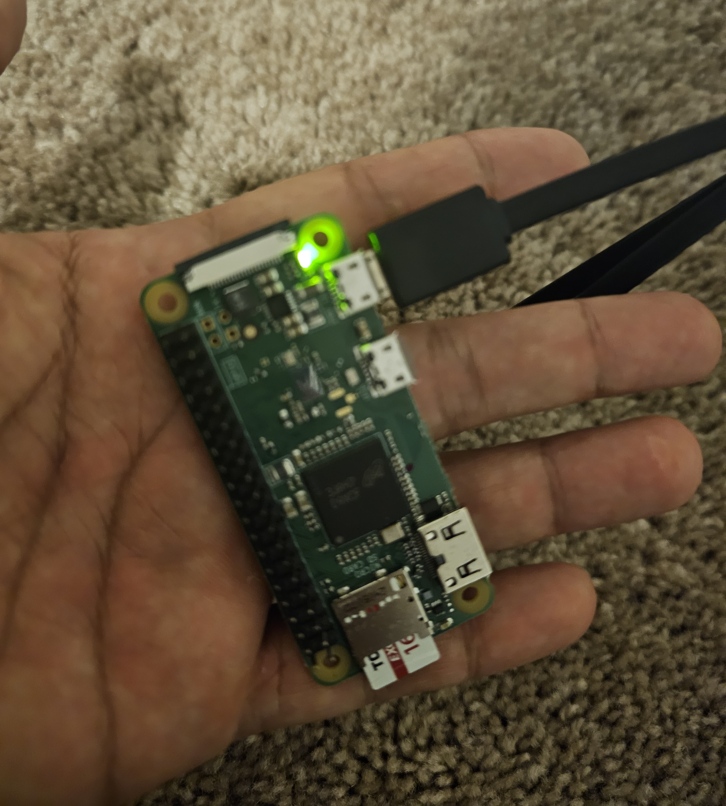
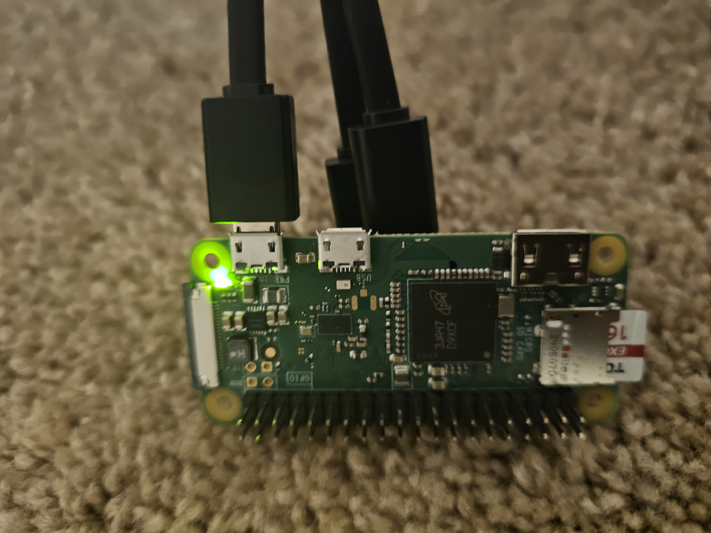

The Big Idea
The default mental model for running a personal AI assistant is a cloud server, a monthly subscription, and a managed dashboard. That model works. It is also overkill for a large category of everyday automation tasks.
PicoClaw is an ultra-lightweight personal AI assistant built in Go, designed from the ground up to run on the cheapest hardware available. Under 10MB RAM. One-second boot on a 0.6GHz single core. A single self-contained binary that runs on x86, ARM64, MIPS, and RISC-V.
I have been running it for a while on a $17 board with an SSD card and an old power adapter. I SSH into it from my terminal when I need to make changes or check logs. That is the entire infrastructure. This article breaks down the setup, the reasoning behind it, and where it fits in a broader automation stack.

The PicoClaw board powered on and running. Small enough to sit in your palm. The green LED confirms it is live and connected.
Start with ClawdBot
If you are new to this category of tooling, ClawdBot is the right starting point. It is the full-featured, managed option in this space: higher compute ceiling, complex pipeline support, managed infrastructure, and a broader feature set out of the box.
Starting with ClawdBot gives you a clear picture of the workflow model before you commit to hardware. You learn what triggers, channels, and automation patterns actually matter for your use case. Once you know exactly what you need running persistently day-to-day, the decision to move to PicoClaw becomes straightforward.
PicoClaw is not a replacement for ClawdBot. It is the stripped-down, hardware-optimized path for when you know your workload and want to run it at minimum cost and footprint.
ClawdBot
- Best for getting started and prototyping
- Full feature set out of the box
- Managed cloud infrastructure
- Higher memory and compute footprint
- Ongoing subscription cost on top of API costs
- Slower startup compared to PicoClaw
PicoClaw
- Always-on, 24/7 persistent execution
- $17 board - one-time hardware cost
- Under 10MB RAM - 99% smaller than ClawdBot
- 1-second boot on 0.6GHz single core
- SSH access from any terminal
- No infrastructure overhead - API costs only
The Setup - Hardware and Cost
The complete hardware breakdown for my current setup:
The board stays plugged in, draws minimal power, and runs continuously. The SSD card handles persistent storage. I SSH into it from my terminal whenever I need to update configuration, check logs, or push a new task. No web dashboard to log into. No billing cycle for the infrastructure layer. No process going to sleep after 30 minutes of inactivity.
The cost advantage is purely on the infrastructure side. API calls cost the same here as they would on ClawdBot or any other platform. What you eliminate is the hosting overhead.
How It Works
What It Runs
The board handles a focused set of tasks that benefit from always-on execution:
The messaging automation is where it earns its keep most visibly. PicoClaw connects to the messaging platforms I use, handles routing, and runs automated responses continuously across channels. Which is something I should address directly.
The board handles this reliably because it never goes down. It is not dependent on my laptop being open, a cloud function staying warm, or a free-tier server running during business hours. It is plugged in, running, and doing its job around the clock.

The full setup - SSD card installed, power and data cables connected. The GPIO pins and compact form factor are visible here. The entire thing sits in a corner and runs indefinitely.
PicoClaw vs ClawdBot - Choosing the Right Tool
After running both, the decision framework is straightforward:
ClawdBot
- Best starting point for new users
- Full feature set, managed infrastructure
- Higher compute ceiling
- Complex multi-step pipelines
- Burst workloads and heavy integrations
- Ongoing subscription cost
PicoClaw
- Always-on, 24/7 persistent execution
- Under 10MB RAM - 99% smaller than ClawdBot
- 1-second boot on minimal hardware
- SSH-accessible, no dashboard required
- Messaging, utilities, scheduled tasks
- No infrastructure overhead - API costs only
The Hybrid Stack
Running PicoClaw alone covers the persistent baseline effectively. But the most capable setup is using both together. PicoClaw handles the always-on lightweight workload. ClawdBot handles anything that requires cloud-scale compute or complex pipeline execution. The division of labor looks like this:
Key Findings
- Under 10MB RAM means PicoClaw runs on hardware nobody else would consider for this use case. A $17 board with an old power adapter is a fully functional AI assistant runtime.
- 1-second boot on a 0.6GHz single core is 400x faster than ClawdBot startup. For persistent tasks this matters less, but it makes iteration and recovery fast.
- API call costs are identical to any cloud setup. The saving is purely on infrastructure - no hosting fee, no subscription layer on top of compute costs.
- Messaging automation runs reliably at this footprint. Telegram, Discord, WhatsApp, Matrix, and others work continuously without issues on the current setup.
- SSD card + old power adapter + $17 board is a complete, production-grade runtime for basic persistent automation tasks.
- The hybrid model is the practical optimum. PicoClaw for the always-on baseline, ClawdBot for workloads that genuinely require cloud scale.
Why This Matters for AI and Automation Practitioners
The default assumption in automation tooling is cloud-first infrastructure. That assumption made sense when edge hardware was expensive and difficult to manage. It is less defensible now.
A $17 board running a Go binary under 10MB handles messaging automation, scheduled utilities, and lightweight monitoring with no ongoing infrastructure cost. That is a meaningful change in the cost structure of personal and small-team automation setups.
What PicoClaw demonstrates is not that cloud platforms are wrong for this category. It demonstrates that the right-sizing question is worth asking seriously. A large class of persistent automation tasks does not require the compute ceiling of a managed cloud service. It requires uptime, a small memory footprint, and SSH access.
My Take
I named my PicoClaw "Batman" for a reason. It runs in the background, handles things quietly, and does not need attention. It has been doing that reliably for long enough that some of the people I communicate with regularly have been interacting with it without realizing it.
PicoClaw alone is an excellent solution for basic automation. The setup cost is a one-time $17. The ongoing cost is the same API spend you would have on any other platform. The uptime is as good as your power source, which in my case is an adapter I had in a drawer.
The starting point I would recommend is ClawdBot. It gives you the full picture of the ecosystem, teaches you the workflow model, and lets you identify exactly what you need running persistently. Then, once you know your workload, move the lightweight persistent tasks to a PicoClaw board. Keep ClawdBot available for the heavy lifting.
That hybrid combination - PicoClaw handling the always-on baseline, ClawdBot available for scale - is the most cost-efficient and capable automation setup I have run.
Discussion question: PicoClaw launched in February 2026 and hit 12,000 GitHub stars in its first week. As ultra-lightweight AI assistants make it easier to self-host on cheap hardware, does the case for managed cloud AI assistants weaken - or do they serve fundamentally different workloads that will always justify the subscription cost? Where do you draw that line in your own automation stack?